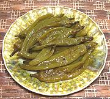

|
Chili Pepper AdoboPhilippine - Adobong Sili | ||||
| Serves: Effort: Sched: DoAhead: |
4 side ** 45 min Yes |
An interesting vegetable side dish or appetizer from the Philippines, mildly tart and quite tasty. How hot is up to the kind of chilis you use (use mild ones - see Note-1). | |||
|
|
12 6 ----- 1/3 3 3 1 1/3 1/8 2/3 ----- 2 |
oz cl --- c T T t t t --- T |
Green Chilis (1) Garlic -- Broth Vinegar (2) Soy Sauce Water Bay Leaf Salt Pepper, black Sugar ---------- Oil |
Prep - (15 min)
|